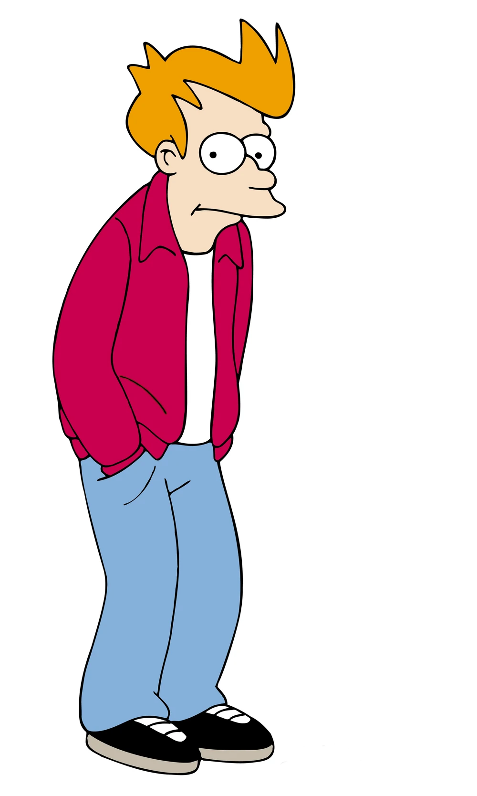
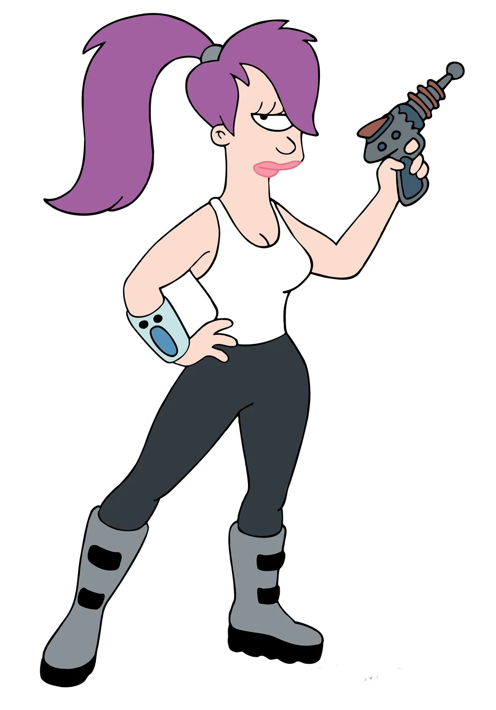
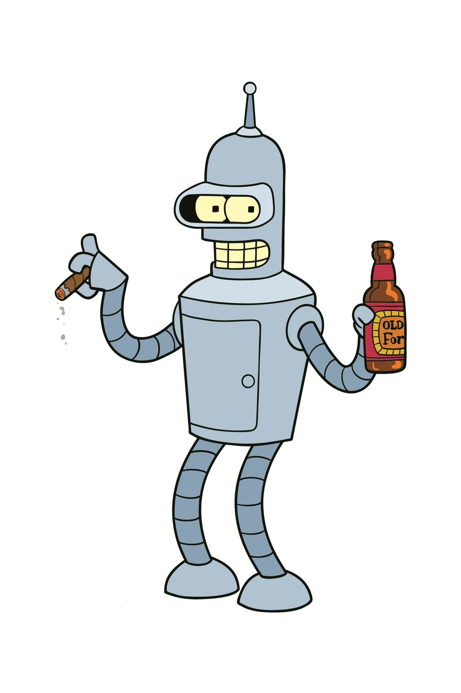
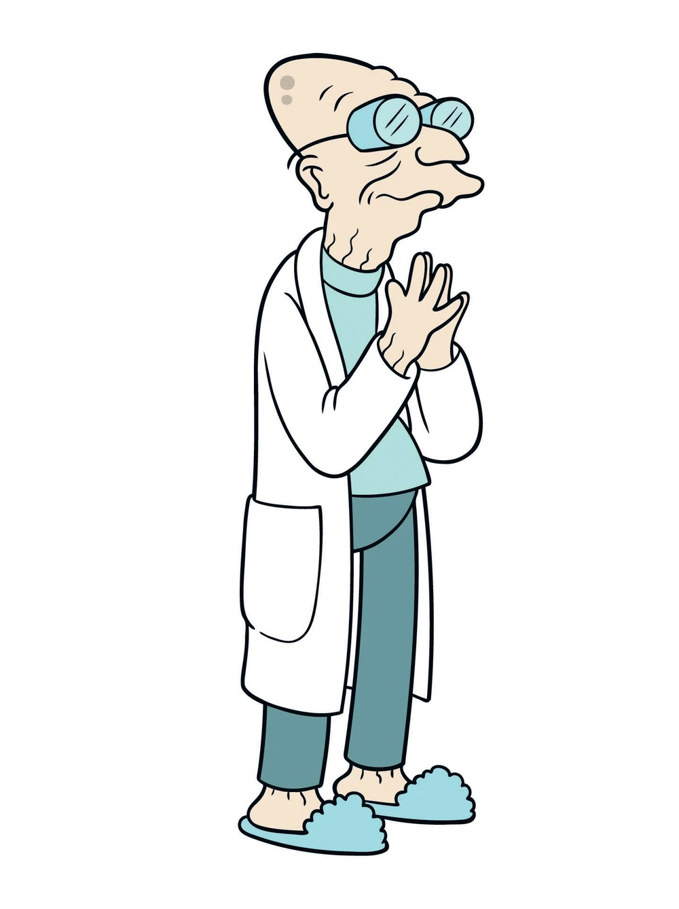
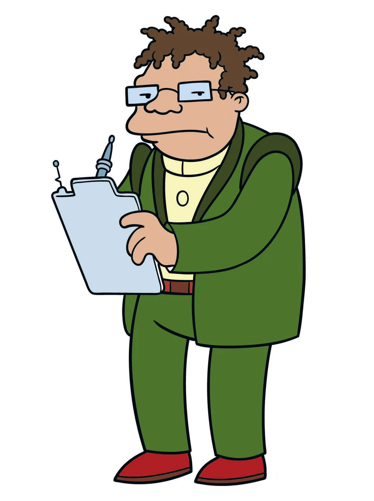
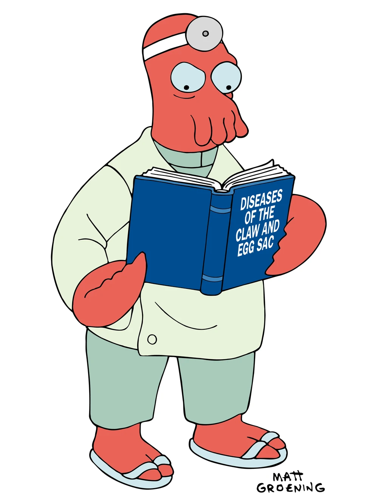
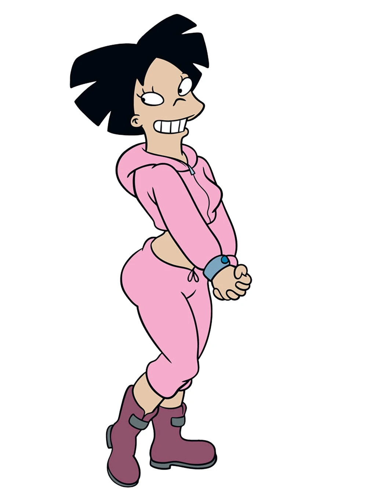

Fry
Philip J. Fry é um entregador de pizza imaturo, desmazelado e de raciocínio lento, embora possuidor de um bom coração. Nos primeiros instantes de 1 de janeiro de 2000, cai "acidentalmente" em uma câmara criogênica, fazendo com que ela seja ativada e o congele. Ele desperta no ano-novo de 2999 pensado ter passado um milhão de anos em um dialogo com a Leela. Por fim ele consegue um emprego como entregador na Planet Express, empresa de propriedade de seu único parente vivo, seu sobrinho o professor Hubert J. Farnsworth.

Leela
Turanga Leela é a competente ciclope capitã da Nave Planet Express. Abandonada quando bebê, cresceu no orfanato Cookieville Minimum Security acreditando ser um alienígena. Antes de se tornar capitã da nave, trabalhou como oficial de atribuição de carreira no laboratório criogênico onde conheceu Fry.

Bender
Bender Bending Rodríguez é um robô alcoólatra, fumante, cleptomaníaco, misantropo, egocêntrico, de boca suja e pavio curto desenvolvido pela Mom's Friendly Robot Company em Tijuana, no México.

Farnsworth
Professor Hubert J. Farnsworth, 30 vezes sobrinho-neto de Fry que fundou a Planet Express Inc. para financiar seus experimentos científicos. Embora seja retratado como um inventor e cientista brilhante, seus 159 anos de idade costumam provocar com frequência acessos de mau humor e esquecimento. Tem um filho de 13 anos chamado Cubert.

Hermes
Hermes Conrad, o contador jamaicano da Planet Express, é um burocrata nível 36 com uma queda por regras e apaixonado pelo tédio de formulários e burocracias. É casado com LaBarbara, com quem tem um filho de 12 anos, Dwight.

Zoidberg
Dr. John A. Zoidberg é um alien de aparência crustácea nascido no planeta Decapod 10, e médico residente da Planet Express. Embora afirme ser um especialista em humanóides, seus conhecimentos de anatomia e fisiologia humana são no mínimo imprecisos. Sem teto e falido, é visto com desdém por todos os empregados da companhia—com exceção de Fry, que o considera nojento mas parece não se importar.

Amy
Amy Wong é a eterna estagiária da Planet Express. Mimada, irresponsável, promíscua e incrivelmente rica, é estudante de engenharia na Universidade de Marte e herdeira do hemisfério ocidental marciano. Apesar de nascida no planeta vermelho, é etnicamente chinesa. Costuma se valer de gírias do século XXXI e xingamentos em cantonês.